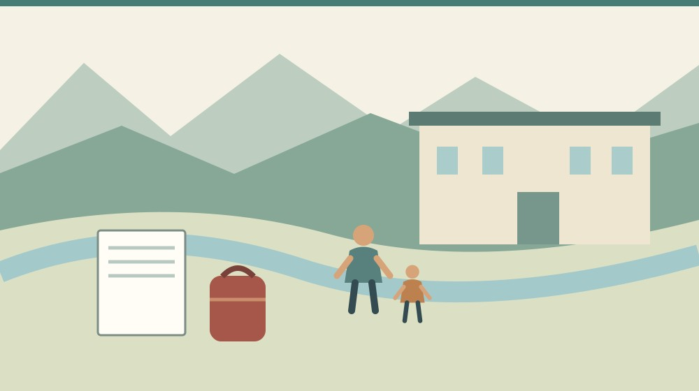

森っ子就学応援金｜森町の入学費用を確認

Q. 森っ子就学応援金は、入学する家庭なら何もしなくても振り込まれるの？
森っ子就学応援金は、児童手当の受給対象者などの条件があります。現行案内では小中学校入学が1人3万円、高校等入学が1人5万円です。高校等入学、または保護者が公務員の場合は申請が必要です。2027年度の給付を確約する情報ではないため、今は受給者と受取口座を確認する準備に使ってください。
秋の入学準備で、支出と受取時期を分ける
森町で子どもの入学を迎える家庭には、学用品を選ぶ仕事だけでなく、健診や学校の案内を確認する負担があります。転入を考える家族なら、住まい、仕事、学校の順番も調整します。入学を支えるお金は、その準備を少し軽くする材料として知りたいところです。
私、大石浩之（磐田市／不動産業）は、住まいを決める家計の中に、子どもの入学費用も並べて考えたいと思います。引越しや住宅の支払いが先に見えると、制服や学用品に必要なお金が後ろへ回ることがあります。支出する時期まで分けて見たいのです。
森町公式「入学」は、来春の小学校入学予定児の就学時健康診断を10月と11月に実施すると案内しています。2026年10月25日にこの記事を読む家族には、入学準備を整理する季節です。健診の詳細は就学時健診の記事で確認できます。
この記事は森っ子就学応援金の現行案内を読み、家計と申請準備を考えるものです。2027年度の金額や受付が確定したとの発表としては扱いません。小学校入学前の秋に読んだことと、翌春の受給が確定したことを分けてください。
事実整理：対象になる三つの条件
森町「森っ子就学応援金について」の更新日は2026年4月17日です。町は、入学時の家庭の経済的負担を軽減し、子育て支援を充実させるために交付すると説明しています。この記事では2026年10月25日に本文を確認しました。
交付対象者の欄は、すべての条件に当てはまる方を対象にしています。一つ目は児童手当の受給対象者であること。二つ目は小学校、中学校、高等学校等へ入学する児童生徒の保護者であることです。子どもの入学だけで条件を満たすとは読めません。
三つ目は、その年度の4月10日時点で森町に住み、住民票があることです。居住と住民票の両方が書かれています。これから家を買う予定がある、親の実家が森町にある、という事情だけで受給できるとは案内されていません。
現行の交付額は、小学校と中学校の入学が児童1人につき3万円です。高等学校等への入学は1人につき5万円とされています。世帯に一律の金額ではなく、入学する児童生徒の区分で読む数字です。
家族の中で児童手当の受給者が誰か分からない場合は、先にその名義を確認します。家計を管理する人、学用品を買う人、児童手当を受け取る人が同じとは限りません。申請の準備は「親がやる」とまとめず、書類上の対象者から整理します。
高校等の「等」にどの学校が含まれるか、個別の進学先が該当するかは、担当窓口へ確認する事項です。学校名や課程を伝えて判断を受ける必要があります。この記事は、すべての進学先を対象として保証するものではありません。
申請不要の家庭と、申請が必要な家庭
森っ子就学応援金は、家庭の区分によって手続きが異なります。町公式の現行案内では、小学校・中学校へ入学し、保護者が公務員以外の場合は申請不要です。対象者へ4月中旬に通知を郵送し、児童手当の受取口座へ振り込むとされています。
申請不要でも、すべての確認が不要になるわけではありません。対象となる条件を満たすか、通知を受け取れるか、どの口座を使うかという確認は残ります。町からの通知がない段階で、家族が受給を確定したものとして家計に入れないようにします。
高等学校等への入学の場合、または保護者が公務員の場合は申請が必要です。同じ町の同じ応援金でも、公務員の家庭には手続きが残る点が見落としやすい事実です。近所の家庭が申請しなかったという話だけで、自分も不要とは判断できません。
申請が必要な区分にも、4月中旬に通知を郵送する案内があります。申請方法はウェブ、郵送、窓口が掲載されています。通知に記載された案内と、家族に使いやすい方法を照らして選びます。どの方法でも必要な確認がなくなるわけではありません。
受取口座を変更する場合は、口座登録等の届出書を健康こども課の窓口へ提出する案内です。転入や家計の変更と重なる場合は、既存口座へ振り込まれると考えてよいか、先に整理したい項目です。家族間の口頭の取り決めだけで口座は変わりません。
現行ページには交付を辞退する場合の届出もあります。制度の利用を一律に勧めるのではなく、家族の事情に応じて通知を確認する仕組みとして読みます。書類を見ても判断できない箇所があれば、自己判断で空欄を埋めず窓口へ確かめます。
高校等の入学は、合格と在学の証明が違う
森町の申請案内は、本人確認書類と受取口座を確認する書類を挙げています。高校等へ入学する場合には、対象児童の在学証明書または学生証など、在学が確認できるものが必要です。書類の名称を先に確認しておくと、準備する時期を分けられます。
合格通知書や入学金領収書は、在学確認の書類として不可と明記されています。入学金を払ったことと、実際に在学していることは、町の手続きでは同じ証明になりません。合格の段階で申請資料が全部そろったと判断しないようにします。
学生証がいつ手元に来るか、在学証明書をどう取得するかは、進学先の学校ごとに確認します。この記事では各学校の交付日や費用を調べていません。学校の事務へ尋ねる項目として、家族の入学準備の予定表へ残すことを提案します。
本人確認や口座の書類は、通知に従って準備します。原本を送る必要があるのか、写しでよいのかなど、提出時の細部までこの記事で推測しません。申請する年度の案内を読み、迷う部分を健康こども課へ確認してから提出します。
子どもが自分で管理する学生証を使うなら、保護者が何の申請に必要かを説明し、確認する日を決めると段取りを組めます。家族の資料だからと無断で取り扱わず、必要な部分だけ準備します。個人情報を含む画像の共有先も絞ります。
家計は、受け取る額より先に支払う月を見る
森っ子就学応援金の現行ページには、通知を4月中旬に郵送するという案内があります。入学前の買い物に先立って振り込まれるとの記載ではありません。入学費用を用意する家庭は、応援金を受け取る時期と支払いが必要な時期を分けて考えます。
家族の予定表には、学用品を買う月、学校から請求がある月、引越しの支払月を置きます。応援金の欄は、通知や支給予定が確認できるまでは「未確定」としておく方法があります。受け取る予定のお金だけで、先の支払いを全部組まないためです。
金額を家計へ置き換えるときも、使い道を町が指定したかのようには書きません。家族が必要な支出を整理するための予算として考えます。3万円や5万円で何が買えるかは、家庭の購入品や価格によって違うため、一律の充足額を断定できません。
入学時の応援金と、経済的事情に応じて学校費用を支える就学援助は別の制度です。森町の就学援助の記事へつなぎ、必要に応じて別々に対象条件を確認できます。同じ「学校のお金」という理由で一つにまとめないようにします。
併用の可否や個別世帯の扱いは、対象制度の窓口へ確認します。この記事では、どの支援とも自由に併用できるとは断定していません。問い合わせでは制度の正式名を並べ、どの給付や費用について聞いているかを明確にすると伝わりやすくなります。
良い点：手続きの負担を分けて示している
森っ子就学応援金の良い点は、入学時の負担を対象とし、小中学校と高校等の区分で額を示していることです。家族が進学段階に合わせて案内を探せます。一般的な子育て支援の一覧より、今回の入学に必要な確認へ近づける構成です。
小中学校入学で公務員以外の保護者には、申請不要の仕組みが用意されています。児童手当の受取口座へ振り込む案内なので、対象家庭が一からすべての申請を作る負担を減らす方向として評価できます。通知を通じて内容を確認する入口もあります。
申請が必要な区分には、ウェブ、郵送、窓口という方法が示されています。仕事や家族の予定に合わせて提出方法を考えられる点は利点です。高校等の在学確認に使えない書類まで書かれており、準備の取り違えを防ぐ材料があります。
私は、給付額の大きさだけで制度を評価しない方がよいと思います。学校や家庭が入学準備で忙しい時期に、申請が要る人と不要な人を分けて伝えることにも意味があります。家族が迷わず手続きを終えられることが、支援の実利になります。
注文したい点：転入と入学が重なる家庭の迷い
森町へ転入する家庭は、応援金の対象条件と、学校の転入手続きをそれぞれ確認する必要があります。町公式「入学」は、住民生活課で転入手続きを行った後、教育委員会へ行き、発行される転入通知書を学校へ提出する流れを示しています。
住民票の手続きをしたから、応援金の確認もすべて済むとは限りません。私は、転入と入学が重なる家庭が、確認する窓口を一枚で整理できる案内があると助かると考えます。学校の指定、児童手当、応援金を混同しないための注文です。
現行の応援金ページだけでは、2027年度の実施内容、具体的な振込日、個別世帯の判定までは確認できません。私は、翌春を準備する家族に現行制度を紹介することと、来年度の受給を期待させ過ぎないことの間で迷います。未確定の部分は、そのまま残します。
その迷いを埋めるために、今する確認と春にする確認を分けます。今は受給者や口座、入学先を整理する。春はその年度の通知と条件を照合する。早く準備できる部分だけ進めれば、年度の情報が変わっても最初からやり直す負担を減らせます。
対案・結論：今日、受給者と口座を確認する
森っ子就学応援金について今日できる一歩は、児童手当の受給者と受取口座を家族で確認することです。申請不要の区分でも口座が手続きにつながります。口座番号を家族全員へ配るのではなく、誰が確認し、どこに記録を保管するかを決めます。
次に、入学区分と保護者が公務員かどうかを書きます。現行案内上、申請が必要となる区分を見分けるためです。勤務先や受給者の状況が変わる予定がある場合は、現在の状態と春の予定を分けて窓口へ伝える材料にします。
転入を予定する家庭は、実際の居住予定日と住民票の手続き予定日も整理します。給付の基準日に合わせるため、実態と異なる住所の扱いを勧めるものではありません。家族がどこで暮らすかを先に考え、その予定を担当窓口へ正確に伝えます。
家族の移住時期を考える場合は、子連れ移住の時期を逆算する記事も使えます。学校や預かりの段取りと、応援金の条件を別々に確認してください。一つの給付額だけで引越し日を決めるのは避けたいと思います。
担当窓口へ問い合わせる際は、子どもの入学区分、保護者の状況、居住と転入の予定を短く並べます。まだ決まっていない点は未定と伝えます。申請方法と、いつの案内で再確認すればよいかを聞き、回答した日と窓口名を記録します。
家族に残す記録：通知と学校の資料を分ける
入学に関する家族の記録では、学校から届く案内と町の給付通知を分けて保管する方法があります。入学式の日程、在学証明、児童手当の資料、応援金の通知は目的が異なります。同じ封筒へ詰め込まず、必要なときに探せる分類を提案します。
申請が必要な場合は、提出した日、提出方法、問い合わせ先を残します。送ったことと受理されたことは別なので、不備の連絡が届く先も確認します。家族の誰か一人が不在でも状況が分かるよう、処理の段階を簡単に書いておくと引継ぎに使えます。
記録には、確認した年度も添えます。2026年度の案内を翌年そのまま使わないためです。保存することは、永久に同じ条件だと考えることではありません。次の通知が届いたら、変わった箇所だけ照合できるようにするための準備です。
大石の視点：入学前の支出を見えなくしない
私は、応援金の額だけで入学の負担を軽く見たくありません。家族は支援の通知を待つ間にも、学校や住まいの準備を進めます。私なら、家計の紙に「支払う月」と「受け取る予定が確認できた月」を分けて書くことを提案します。これは相談現場の実話ではなく、家族が手元のお金を見失わないための私の考えです。制度を知ることと、生活費を確保することを一緒に進めたいと思います。
申請不要という言葉だけで、確認を終えないことです。家庭の区分と受給者を確かめ、春の通知へつなげます。今日、児童手当の受取口座を確認できれば、一歩進んでいます。来年度の受給を断定せずに準備することはできます。
よくある質問
小学校へ入学する家庭は全員申請不要ですか？
現行案内では、小中学校へ入学し、保護者が公務員以外の場合は申請不要です。ただし、児童手当の受給対象者であることや、その年度の4月10日時点の居住・住民票などの条件があります。保護者が公務員なら申請が必要です。家庭の区分を確認し、対象年度の町の通知と照合してください。
高校の合格通知書で申請できますか？
森町の現行案内は、高校等への入学について在学証明書や学生証などを必要書類とし、合格通知書や入学金領収書は不可と明記しています。合格と在学は同じ証明ではありません。学校で在学確認書類を受け取れる時期と、町の申請案内を確認し、必要な書類をそろえて提出してください。
2027年春の入学でも同じ金額が受け取れますか？
この記事が確認したのは2026年4月17日更新の現行案内で、2027年度の金額や受付を確約するものではありません。翌春の入学を準備する家庭は、今は受給者や口座、入学区分を整理し、2027年度の町の案内で条件を再確認してください。入学前に振り込まれるお金として家計に確定計上しないようにします。
出典・確認日
2026年10月確認。開催・制度の数値は公式情報、評価と段取りの提案は執筆者の意見です。
- 森町：森っ子就学応援金（2026年10月25日確認）
- 森町：入学（2026年10月25日確認）
開催日時、取扱条件、制度・数値は変わる場合があります。実際の利用前に主催者・担当窓口の最新案内を確認してください。個別の判断が必要な場合は、担当窓口や関係する専門家へご相談ください。